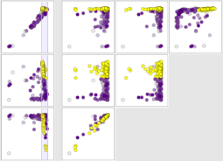

ParaGlide: Interactive Parameter Space Partitioning for Computer Simulations


Venue. TVCG (2013)
Abstract. In this paper, we introduce ParaGlide, a visualization system designed for interactive exploration of parameter spaces of multidimensional simulation models. To get the right parameter configuration, model developers frequently have to go back and forth between setting input parameters and qualitatively judging the outcomes of their model. Current state-of-the-art tools and practices, however, fail to provide a systematic way of exploring these parameter spaces, making informed decisions about parameter configurations a tedious and workload-intensive task. ParaGlide endeavors to overcome this shortcoming by guiding data generation using a region-based user interface for parameter sampling and then dividing the model's input parameter space into partitions that represent distinct output behavior. In particular, we found that parameter space partitioning can help model developers to better understand qualitative differences among possibly high-dimensional model outputs. Further, it provides information on parameter sensitivity and facilitates comparison of models. We developed ParaGlide in close collaboration with experts from three different domains, who all were involved in developing new models for their domain. We first analyzed current practices of six domain experts and derived a set of tasks and design requirements, then engaged in a user-centered design process, and finally conducted three longitudinal in-depth case studies underlining the usefulness of our approach.
Link to this page: